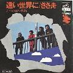

ディスコ4
シングルレコード（ＥＰ）盤です。ジャケット写真があるものを掲載します。

遠い世界に／ささ舟
ビクター SF-11
1971年10月5日
風がなにかを(フランス語盤)/
そんな気が
URC URT-0062
1971年
そんなに愛が欲しいのなら
気ままな暮し
ビクター SF-7
1971年9月5日
上野市/花と空に
ビクター SF-99
1975年8月25日
バラのお嬢さん/
君は今が美しい
ビクター SF-6012
1976年10月25日
君のひとみの歌/
一枚のレコード
ビクター SF-6027
1977年6月25日
青春の足跡/
君のスターライトシップ
ビクター SV-6472
1978年9月25日
愛情リンゴ/倖せの魔法
ビクター SV-6601
1979年6月25日
田舎町のうまい酒/あした
ビクター SV-6667
1979年12月20日
悲しい街角／ささ舟
ビクター SV-1071
1970年4月5日
風がなにかを・・・/
ふる里の言葉は
URC URT-0054
1971年
ボクらの町をうたおう/
ボクは風
ビクター SF-20
1972年3月25日
血まみれの鳩／
まるで洪水のように
URC URS-0016
1969年
ボクたち大阪の子どもやでェ
ビクター KV-46
1976年11月10日
ジャンジャン町ぶるうす／
ある朝こっそり
URC URT-0072
1975年
君がやって来る／夏
ビクター SF-6002
1976年5月25日
美津子／上野市
ビクターSV-7253
1982年9月21日
恋は風に乗って／
遠い世界に
ビクターSV-1047
遠い空の彼方に／
小鳥は自由に飛ぶものです
ビクター SＶ-2182
1976年5月25日
盤の型番
シングルレコードについてのコメント
URC URT -
0054
(♯-い)
このシングルは，LP「Flight」のシングルカットだと思われ，LP「Flight」の録音は 1971年の4月8・9・
11・12・24日 5月9・10・14日 アオイスタジオとなっており・・・シングルレコード「風が何かを・・・」のジャケット
には発表年についてどこにも表示がないため判然としません・・・CD-BOXのp83にも1969年と記載されてお
り，大藤さんはこれを参考にＵＰしたのではなかろうかと推察させていただいております。さて，歌集№２の
裏表紙の画は，このシングルの画と同じ録音スタジオの一こまに違いありません。この歌集の発行日は
1971.9.15であります。(
1971年に訂正いたしました。情報ありがとうございます。おおふじ)
ディスコ1
ディスコ2
ディスコ3
ディスコ5
ソンググラフィ
CDBOX
曲目検索風船
曲目検索西岡ソロ
HOME
/*
風船ランドトップへ
*/